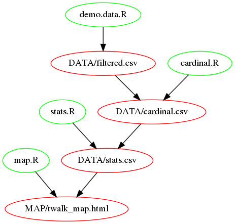
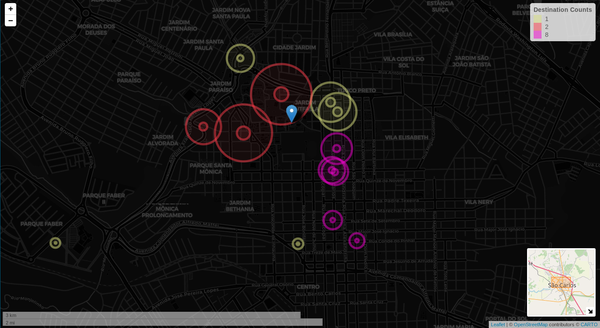

Introduction
Behavioural economics, as the psychology behind economic activities(2),
is founded upon the basis of choice(3).
Spatial behavior is defined from the perspective of
aversiveness and indifference to proximity(4), eg. if opportunities within a
constrained spatial range are evaluated
only in terms of attraction attributes, then the individual’s
spatial choices may be spatially indifferent(4).
However, there exists a variety-seeking tendency, that is an intrinsic
tendency to engage a variation in
behavior as a goal in and of itself, such variations are known as
variety-seeking behavior(5).
And yet, spatial indifference is bounded by constraints of willingness
to traverse space over a certain spatial range to a set of opportunities
that are spatially finite.
Project Description
We introduce twalk, an InfoVis utility,
intended to serve spatial choice variety seekers in
understanding their spatially finite opportunities from
within a specified spatial range defined in terms of origin/destination walking duration.
Project Structure
We follow a simple programming style of single-purpose scripts managed
via make(1).

Fig: Project Overview
Data Acquisition
While data acquisition is out of our scope, we needed
demo data to demonstrate our project.
Our demo data is sampled from Google's
Places and MatrixDistance API Endpoints.
For simplicity, we maintain a wide schema,
until we reach the visualization stage.
e.g. filtered.csv -> cardinal.csv -> stats.csv -> (visualization)
We filter our acquired data by a specified maximum walking duration, as
a constrain of our spatial range and store it
as filtered.csv, while keeping the original data separately.
Cardinal Direction Ranking
First, we used our origin/destinations data to calculate to which
cardinal direction each destination belongs.
We used R's GeoSphere
bearingRhumb() function.
And we relaxed the cardinal accuracy of the destinations to provide a useful
abstraction of a walking direction choice.
We calculate our descriptive statistics: standard deviation, mean, and
coefficient of variation; as we may represent walking duration spread via CV,
spatial proximity via the mean and spatial variety via the destination count.
We choose to scope our current work to the use of, destination counts
within a specified spatial range at each direction, as a guiding score
of variety for spatial choice variety seekers.
Information Visualization
Data is insufficient for meaningful communication
while information, as data transformed and interpreted within context is.
And while Visualization is a cognitive activity, facilitated by
external stimuli from which we build internal mental representations
of the world (1);
Information Visualization is the process that provides a capability,
for transforming data into information(1).
We note that the more specific the question we are asking,
the more specific and clear the
visual result will be(6). And as such our single-purpose utility employs
minimal visual constructs to deliver its intended answer to the question:
Which walking direction(s) would offer more opportunities for spatial choice
variety seekers?
And to answer,
our process of transforming data into information
included the feature use of spatial orientation, color, size, and interaction:
1. We provided our users with a spatial orientation via the use of a map.
2. We offered a map's legend to color associate a spatial direction with
destination counts.
3. We represented walk duration proximity via size, the bigger the radius
of a destination circle, the closer it is to origin.
4. And finally, we offered information on-demand via user's interaction e.g. popup interaction.

Conclusion
Spatial indifference is bounded by constraints of willingness to traverse
space over a certain range, and regardless of variety-seeking behavior,
the set of opportunities considered by an individual when making a
spatial choice are spatially finite. We employed cardinal directions and
destination counts to offer, through spatial visual constructs of color and
size, each walking direction opportunities.
Information Visualization offers
a much needed aid, and our introduced utility presents useful visualization of
the spatially finite opportunities for its intended audience.
Acknowledgment
We are very grateful to
Osafu Augustine Egbon (NUSP: 11494792),
an ICMC Statistics PostGrad, for his
enthusiasm and diligence in fulfilling our various statistical inquiries.
References
(1)
"Introduction to information visualization",
Riccardo Mazza,
Springer,
2009
(2)
"Theory of Games and Economic Behavior",
Oskar Morgenstern, John von Neumann,
Princeton University Press,
1944
(3)
"Urban Dynamics and Spatial Choice Behaviour",
Joost Hauer, Harry Timmermans, and Neil Wrigley,
Kluwer Academic Publishers,
1989
(4)
"Spatial Choice Theory and Spatial Indifference: A Comment",
Frank Stetzer and Alan G. Phipps
(5)
"Variety-seeking in Product Choice Behavior",
Hans (J.C.M.) van Trijp,
Pudoc Scientific Publishers
1995
(6)
"Visualizing Data",
Ben Fry,
O'Reilly,
2008